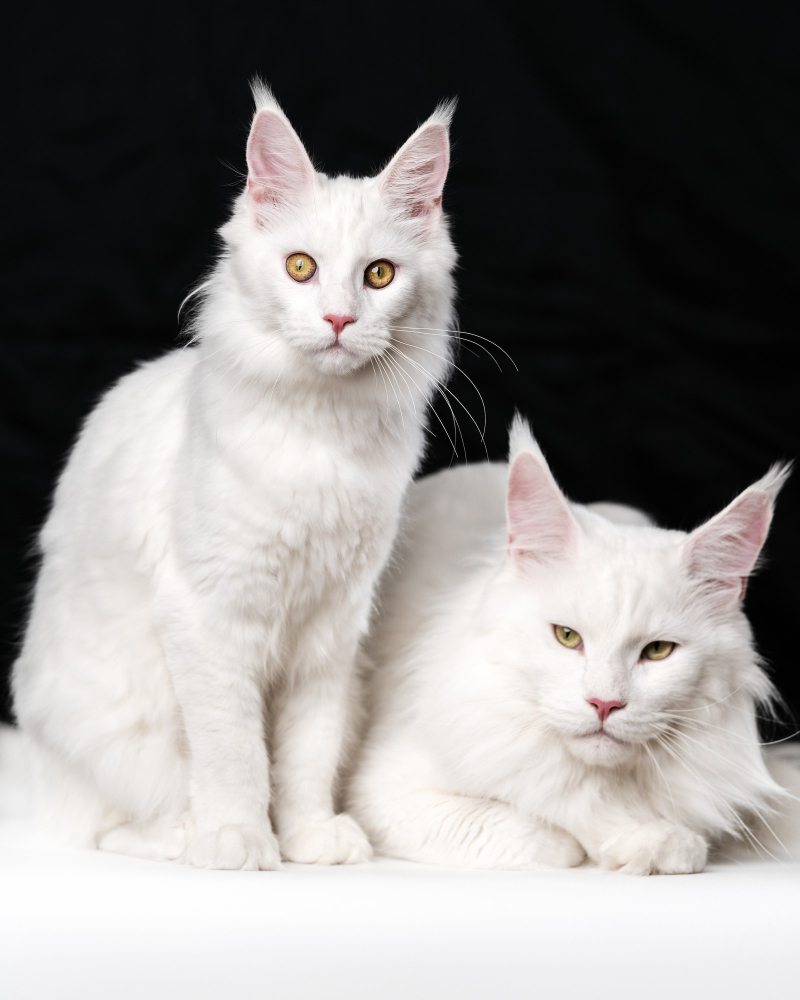

TODO: Transforme o texto "Voltar" abaixo em hiperlink que leva o usuário para a página com o sumário de todos os gatos
VoltarSua pelagem pode ter diversas cores, do branco ao preto, passando pelo vermelho e por misturas. E é nesta raça que mais surgem gatos com heterocromia, ou seja, que possuem um olho de cada cor, sendo normalmente um amarelo esverdeado e outro azul.
